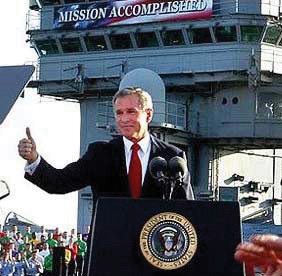

On May 21, 2009, President Obama gave a speech explaining and justifying his decision to close the Guantánamo Bay detention center (prison). The facility had been established in 2002 by the Bush administration to hold detainees from the war in Afghanistan and later Iraq. President Obama spoke at the National Archives, in front of portraits of the founding fathers, pages of the Constitution open at his side. He thereby identified himself and his decision with the founding fathers, the treasured Constitution, and the rule of law.
Presidents can connect their policy proposals to revered American forebears and documents, but this does not guarantee success.
Source: Photo courtesy of the White House (Pete Souza), http://www.flickr.com/photos/whitehouse/3583575606/.
Yet, years later, the prison remained open. The president had failed to offer a practical alternative or present one to Congress. Lawmakers had proved unwilling to approve funds to close it. The Republican National Committee had conducted a television advertising campaign implying that terrorists were going to be dumped onto the US mainland, presenting a major terrorist threat.
After reading this section, you should be able to answer the following questions:
The presidency is seen as the heart of the political system. It is personalized in the president as advocate of the national interest, chief agenda-setter, and chief legislator.Jeffrey K. Tulis, The Rhetorical Presidency (Princeton, NJ: Princeton University Press, 1988). Scholars evaluate presidents according to such abilities as “public communication,” “organizational capacity,” “political skill,” “policy vision,” and “cognitive skill.”Fred I. Greenstein, The Presidential Difference: Leadership Style from FDR to Barack Obama, 3rd ed. (Princeton, NJ: Princeton University Press, 2009). The media too personalize the office and push the ideal of the bold, decisive, active, public-minded president who altruistically governs the country.For presidential depictions in the media, see Jeff Smith, The Presidents We Imagine (Madison: University of Wisconsin Press, 2009).
Two big summer movie hits, Independence Day (1996) and Air Force One (1997) are typical: ex-soldier presidents use physical rather than legal powers against (respectively) aliens and Russian terrorists. The president’s tie comes off and heroism comes out, aided by fighter planes and machine guns. The television hit series The West Wing recycled, with a bit more realism, the image of a patriarchal president boldly putting principle ahead of expedience.Trevor Parry-Giles and Shawn J. Parry-Giles, The Prime-Time Presidency: The West Wing and U.S. Nationalism (Champaign: University of Illinois Press, 2006).
Figure 13.1
Whether swaggering protagonists of hit movies Independence Day and Air Force One in the 1990s or more down-to-earth heroes of the hit television series The West Wing, presidents are commonly portrayed in the media as bold, decisive, and principled.
Source: Photo courtesy of US Navy Chief Journalist Daniel Ross, http://commons.wikimedia.org/wiki/File:Martinsheennavy.jpg.
Presidents are even presented as redeemers.Mark Sachleben and Kevan M. Yenerall, Seeing the Bigger Picture: Understanding Politics through Film and Television (New York: Peter Lang, 2004), chap. 4; and for a detailed survey, see Jeff Smith, The Presidents We Imagine (Madison: University of Wisconsin Press, 2009). There are exceptions: presidents depicted as “sleazeballs” or “simpletons.”Stephanie Greco Larson, “Political Cynicism and Its Contradictions in the Public, News, and Entertainment,” in It’s Show Time! Media, Politics, and Popular Culture, ed. David A. Schultz (New York: Peter Lang, 2000), 101–116.
Mount Rushmore
Carved into the granite rock of South Dakota’s Mount Rushmore, seven thousand feet above sea level, are the faces of Presidents George Washington, Thomas Jefferson, Abraham Lincoln, and Theodore Roosevelt. Sculpted between 1927 and 1941, this awe-inspiring monument achieved even greater worldwide celebrity as the setting for the hero and heroine to overcome the bad guys at the climax of Alfred Hitchcock’s classic and ever-popular film North by Northwest (1959).
This national monument did not start out devoted to American presidents. It was initially proposed to acknowledge regional heroes: General Custer, Buffalo Bill, the explorers Lewis and Clark. The sculptor, Gutzon Borglum, successfully argued that “a nation’s memorial should…have a serenity, a nobility, a power that reflects the gods who inspired them and suggests the gods they have become.”Cited in Robert J. Dean, Living Granite (New York: Viking Press, 1949), 18.
The Mount Rushmore monument is an enduring image of the American presidency by celebrating the greatness of four American presidents. The successors to Washington, Jefferson, Lincoln, and Roosevelt do their part by trying to associate themselves with the office’s magnificence and project an image of consensus rather than conflict, sometimes by giving speeches at the monument itself. A George W. Bush event placed the presidential podium at such an angle that the television camera could not help but put the incumbent in the same frame as his glorious predecessors.
George W. Bush Speaking in Front of Mt. Rushmore
Source: Photo courtesy of the Executive Office of the President of the United States, http://commons.wikimedia.org/wiki/File:Bush_at_Mount_Rushmore.jpg.
The enduring image of Mount Rushmore highlights and exaggerates the importance of presidents as the decision makers in the American political system. It elevates the president over the presidency, the occupant over the office. All depends on the greatness of the individual president—which means that the enduring image often contrasts the divinity of past presidents against the fallibility of the current incumbent.
News depictions of the White House also focus on the person of the president. They portray a “single executive image” with visibility no other political participant can boast. Presidents usually get positive coverage during crises foreign or domestic. The news media depict them speaking for and symbolically embodying the nation: giving a State of the Union address, welcoming foreign leaders, traveling abroad, representing the United States at an international conference. Ceremonial events produce laudatory coverage even during intense political controversy.
The media are fascinated with the personality and style of individual presidents. They attempt to pin them down. Sometimes, the analyses are contradictory. In one best-selling book, Bob Woodward depicted President George W. Bush as, in the words of reviewer Michiko Kakutani, “a judicious, resolute leader…firmly in control of the ship of state.” In a subsequent book, Woodward described Bush as “passive, impatient, sophomoric and intellectual incurious…given to an almost religious certainty that makes him disinclined to rethink or re-evaluate decisions.”Michiko Kakutani, “A Portrait of the President as the Victim of His Own Certitude,” review of State of Denial: Bush at War, Part III, by Bob Woodward, New York Times, September 30, 2006, A15; the earlier book is Bush at War (New York: Simon & Schuster, 2002).
This media focus tells only part of the story.On the contrast of “single executive image” and the “plural executive reality,” see Lyn Ragsdale, Presidential Politics (Boston: Houghton Mifflin Harcourt, 1993). The president’s independence and ability to act are constrained in several ways, most notably by the Constitution.
Article II of the Constitution outlines the office of president. Specific powers are few; almost all are exercised in conjunction with other branches of the federal government.
Table 13.1 Bases for Presidential Powers in the Constitution
| Article I, Section 7, Paragraph 2 | Veto |
| Pocket veto | |
| Article II, Section 1, Paragraph 1 | “The Executive Power shall be vested in a President…” |
| Article II, Section 1, Paragraph 7 | Specific presidential oath of office stated explicitly (as is not the case with other offices) |
| Article II, Section 2, Paragraph 1 | Commander in chief of armed forces and state militias |
| Article II, Section 2, Paragraph 1 | Can require opinions of departmental secretaries |
| Article II, Section 2, Paragraph 1 | Reprieves and pardons for offences against the United States |
| Article II, Section 2, Paragraph 2 | Make treaties |
| appoint ambassadors, executive officers, judges | |
| Article II, Section 2, Paragraph 3 | Recess appointments |
| Article II, Section 3 | State of the Union message and recommendation of legislative measures to Congress |
| Convene special sessions of Congress | |
| Receive ambassadors and other ministers | |
| “He shall take Care that the Laws be faithfully executed” |
Presidents exercise only one power that cannot be limited by other branches: the pardon. So controversial decisions like President Gerald Ford’s pardon of his predecessor Richard Nixon for “crimes he committed or may have committed” or President Jimmy Carter’s blanket amnesty to all who avoided the draft during the Vietnam War could not have been overturned.
Presidents have more powers and responsibilities in foreign and defense policy than in domestic affairs. They are the commanders in chief of the armed forces; they decide how (and increasingly when) to wage war. Presidents have the power to make treaties to be approved by the Senate; the president is America’s chief diplomat. As head of state, the president speaks for the nation to other world leaders and receives ambassadors.
The Constituion
Read the entire Constituion at http://www.archives.gov/exhibits/charters/constitution_transcript.html.
The Constitution directs presidents to be part of the legislative process. In the annual State of the Union address, presidents point out problems and recommend legislation to Congress. Presidents can convene special sessions of Congress, possibly to “jump-start” discussion of their proposals. Presidents can veto a bill passed by Congress, returning it with written objections. Congress can then override the veto. Finally, the Constitution instructs presidents to be in charge of the executive branch. Along with naming judges, presidents appoint ambassadors and executive officers. These appointments require Senate confirmation. If Congress is not in session, presidents can make temporary appointments known as recess appointmentsJudicial or executive appointments made by the president while Congress is out of session that do not require Senate confirmation; they last until the end of the congressional session. without Senate confirmation, good until the end of the next session of Congress.
The Constitution’s phrase “he shall take Care that the Laws be faithfully executed” gives the president the job to oversee the implementation of laws. Thus presidents are empowered to issue executive orders to interpret and carry out legislation. They supervise other officers of the executive branch and can require them to justify their actions.
Almost all presidential powers rely on what Congress does (or does not do). Presidential executive orders implement the law but Congress can overrule such orders by changing the law. And many presidential powers are delegated powersPresidential prerogatives accorded by legislation, where Congress gives authority under the powers given to it by the Constitution. that Congress has accorded presidents to exercise on its behalf—and that it can cut back or rescind.
Congress can challenge presidential powers single-handedly. One way is to amend the Constitution. The Twenty-Second Amendment was enacted in the wake of the only president to serve more than two terms, the powerful Franklin D. Roosevelt (FDR). Presidents now may serve no more than two terms. The last presidents to serve eight years, Ronald Reagan, Bill Clinton, and George W. Bush, quickly became “lame ducks” after their reelection and lost momentum toward the ends of their second terms, when attention switched to contests over their successors.
ImpeachmentCongress’s power to remove executive officers and judges from office for “treason, bribery and high crimes and misdemeanors.” gives Congress “sole power” to remove presidents (among others) from office.The language in the Constitution comes from Article I, Section 2, Clause 5, and Article I, Section 3, Clause 7. This section draws from Michael Les Benedict, The Impeachment and Trial of Andrew Johnson (New York: Norton, 1973); John R. Labowitz, Presidential Impeachment (New Haven, CT: Yale University Press, 1978); and Michael J. Gerhardt, The Federal Impeachment Process: A Constitutional and Historical Analysis, 2nd ed. (Chicago: University of Chicago Press, 2000). It works in two stages. The House decides whether or not to accuse the president of wrongdoing. If a simple majority in the House votes to impeach the president, the Senate acts as jury, House members are prosecutors, and the chief justice presides. A two-thirds vote by the Senate is necessary for conviction, the punishment for which is removal and disqualification from office.
Prior to the 1970s, presidential impeachment was deemed the founders’ “rusted blunderbuss that will probably never be taken in hand again.”The early twentieth-century political scientist Henry Jones Ford quoted in John R. Labowitz, Presidential Impeachment (New Haven, CT: Yale University Press, 1978), 91. Only one president (Andrew Johnson in 1868) had been impeached—over policy disagreements with Congress on the Reconstruction of the South after the Civil War. Johnson avoided removal by a single senator’s vote.
Presidential Impeachment
Read about the impeachment trial of President Johnson at http://www.senate.gov/artandhistory/history/minute/The_Senate_Votes_on_a_Presidential_Impeachment.htm.
Read about the impeachment trial of President Clinton at http://www.lib.auburn.edu/madd/docs/impeach.html.
Since the 1970s, the blunderbuss has been dusted off. A bipartisan majority of the House Judiciary Committee recommended the impeachment of President Nixon in 1974. Nixon surely would have been impeached and convicted had he not resigned first. President Clinton was impeached by the House in 1998, though acquitted by the Senate in 1999, for perjury and obstruction of justice in the Monica Lewinsky scandal.
Figure 13.2
Bill Clinton was only the second US president to be impeached for “high crimes and misdemeanors” and stand trial in the Senate. Not surprisingly, in this day of huge media attention to court proceedings, the presidential impeachment trial was covered live by television and became endless fodder for twenty-four-hour-news channels. Chief Justice William Rehnquist presided over the trial. The House “managers” (i.e., prosecutors) of the case are on the left, the president’s lawyers on the right.
Much of the public finds impeachment a standard part of the political system. For example, a June 2005 Zogby poll found that 42 percent of the public agreed with the statement “If President Bush did not tell the truth about his reasons for going to war with Iraq, Congress should consider holding him accountable through impeachment.”Polling Report, http://www.pollingreport.com/bush.htm, accessed July 7, 2005.
Impeachment can be a threat to presidents who chafe at congressional opposition or restrictions. All three impeached presidents had been accused by members of Congress of abuse of power well before allegations of law-breaking. Impeachment is handy because it refers only vaguely to official misconduct: “treason, bribery, or other high crimes and misdemeanors.”
From Congress’s perspective, impeachment can work. Nixon resigned because he knew he would be removed from office. Even presidential acquittals help Congress out. Impeachment forced Johnson to pledge good behavior and thus “succeeded in its primary goal: to safeguard Reconstruction from presidential obstruction.”Michael Les Benedict, The Impeachment and Trial of Andrew Johnson (New York: Norton, 1973), 139. Clinton had to go out of his way to assuage congressional Democrats, who had been far from content with a number of his initiatives; by the time the impeachment trial was concluded, the president was an all-but-lame duck.
Presidents claim inherent powersPresidential prerogatives claimed by presidents as implied by either the office of the president itself or the provisions of the Constitution. not explicitly stated but that are intrinsic to the office or implied by the language of the Constitution. They rely on three key phrases. First, in contrast to Article I’s detailed powers of Congress, Article II states that “The Executive Power shall be vested in a President.” Second, the presidential oath of office is spelled out, implying a special guardianship of the Constitution. Third, the job of ensuring that “the Laws be faithfully executed” can denote a duty to protect the country and political system as a whole.
Ultimately, the Supreme Court can and does rule on whether presidents have inherent powers. Its rulings have both expanded and limited presidential power. For instance, the justices concluded in 1936 that the president, the embodiment of the United States outside its borders, can act on its behalf in foreign policy.
But the court usually looks to congressional action (or inaction) to define when a president can invoke inherent powers. In 1952, President Harry Truman claimed inherent emergency powers during the Korean War. Facing a steel strike he said would interrupt defense production, Truman ordered his secretary of commerce to seize the major steel mills and keep production going. The Supreme Court rejected this move: “the President’s power, if any, to issue the order must stem either from an act of Congress or from the Constitution itself.”Respectively, United States v. Curtiss-Wright Export Corp, 299 US 304 (1936); Youngstown Sheet & Tube Company v. Sawyer, 343 US 579 (1952).
Only two positions in the presidency are elected: the president and vice president. With ratification of the Twenty-Fifth Amendment in 1967, a vacancy in the latter office may be filled by the president, who appoints a vice president subject to majority votes in both the House and the Senate. This process was used twice in the 1970s. Vice President Spiro Agnew resigned amid allegations of corruption; President Nixon named House Minority Leader Gerald Ford to the post. When Nixon resigned during the Watergate scandal, Ford became president—the only person to hold the office without an election—and named former New York Governor Nelson Rockefeller vice president.
The vice president’s sole duties in the Constitution are to preside over the Senate and cast tie-breaking votes, and to be ready to assume the presidency in the event of a vacancy or disability. Eight of the forty-three presidents had been vice presidents who succeeded a dead president (four times from assassinations). Otherwise, vice presidents have few official tasks. The first vice president, John Adams, told the Senate, “I am Vice President. In this I am nothing, but I may be everything.” More earthily, FDR’s first vice president, John Nance Garner, called the office “not worth a bucket of warm piss.”
In recent years, vice presidents are more publicly visible and have taken on more tasks and responsibilities. Ford and Rockefeller began this trend in the 1970s, demanding enhanced day-to-day responsibilities and staff as conditions for taking the job. Vice presidents now have a West Wing office, are given prominent assignments, and receive distinct funds for a staff under their control parallel to the president’s staff.Paul C. Light, Vice-Presidential Power: Advice and Influence in the White House (Baltimore: Johns Hopkins University Press, 1984).
Arguably the most powerful occupant of the office ever was Dick Cheney. This former doctoral candidate in political science (at the University of Wisconsin) had been a White House chief of staff, member of Congress, and cabinet secretary. He possessed an unrivaled knowledge of the power relations within government and of how to accumulate and exercise power. As George W. Bush’s vice president, he had access to every cabinet and subcabinet meeting he wanted to attend, chaired the board charged with reviewing the budget, took on important issues (security, energy, economy), ran task forces, was involved in nominations and appointments, and lobbied Congress.Barton Gellman and Jo Becker, “Angler: The Cheney Vice Presidency,” Washington Post, June 24, 2007, A1.
The presidency is organized around two offices. They enhance but also constrain the president’s power.
The Executive Office of the President (EOP)An umbrella organization started in 1939 by Franklin D. Roosevelt for various presidential staff agencies, many established by law. is an umbrella organization encompassing all presidential staff agencies. Most offices in the EOP, such as the Office of the Vice President, the National Security Council, and the Office of Management and Budget, are established by law; some positions require Senate confirmation.
Inside the EOP is the White House Office (WHO)An organization within the EOP that contains the president’s personal advisors and staffers.. It contains the president’s personal staff of assistants and advisors; most are exempt from Congress’s purview. Though presidents have a free hand with the personnel and structure of the WHO, its organization has been the same for decades. Starting with Nixon in 1969, each president has named a chief of staff to head and supervise the White House staff, a press secretary to interact with the news media, and a director of communication to oversee the White House message. The national security advisor is well placed to become the most powerful architect of foreign policy, rivaling or surpassing the secretary of state. New offices, such as President Bush’s creation of an office for faith-based initiatives, are rare; such positions get placed on top of or alongside old arrangements.
Even activities of a highly informal role such as the first lady, the president’s spouse, are standardized. It is no longer enough for them to host White House social events. They are brought out to travel and campaign. They are presidents’ intimate confidantes, have staffers of their own, and advocate popular policies (e.g., Lady Bird Johnson’s highway beautification, Nancy Reagan’s antidrug crusade, and Barbara Bush’s literacy programs). Hillary Rodham Clinton faced controversy as first lady by defying expectations of being above the policy fray; she was appointed by her husband to head the task force to draft a legislative bill for a national health-care system. Clinton’s successor, Laura Bush, returned the first ladyship to a more social, less policy-minded role. Michelle Obama’s cause is healthy eating. She has gone beyond advocacy to having Walmart lower prices on the fruit and vegetables it sells and reducing the amount of fat, sugar, and salt in its foods.
The media and the public expect presidents to put their marks on the office and on history. But “the institution makes presidents as much if not more than presidents make the institution.”Lyn Ragsdale and John J. Theis III, “The Institutionalization of the American Presidency, 1924–92,” American Journal of Political Science 41, no. 4 (October 1997): 1280–1318 at 1316. See also John P. Burke, The Institutional Presidency, 2nd ed. (Baltimore: Johns Hopkins University Press, 2000).
The presidency became a complex institution starting with FDR, who was elected to four terms during the Great Depression and World War II. Prior to FDR, presidents’ staffs were small. As presidents took on responsibilities and jobs, often at Congress’s initiative, the presidency grew and expanded.
Not only is the presidency bigger since FDR, but the division of labor within an administration is far more complex. Fiction and nonfiction media depict generalist staffers reporting to the president, who makes the real decisions. But the WHO is now a miniature bureaucracy. The WHO’s first staff in 1939 consisted of eight generalists: three secretaries to the president, three administrative assistants, a personal secretary, an executive clerk. Since the 1980s, the WHO has consisted of around eighty staffers; almost all either have a substantive specialty (e.g., national security, women’s initiatives, environment, health policy) or emphasize specific activities (e.g., White House legal counsel, director of press advance, public liaison, legislative liaison, chief speechwriter, director of scheduling). The White House Office adds another organization for presidents to direct—or lose track of.
The large staff in the White House, and the Old Executive Office Building next door, is no guarantee of a president’s power. These staffers “make a great many decisions themselves, acting in the name of the president. In fact, the majority of White House decisions—all but the most crucial—are made by presidential assistants.”John H. Kessel, Presidents, the Presidency, and the Political Environment (Washington, DC: CQ Press, 2001), 2.
Most of these labor in anonymity unless they make impolitic remarks. For example, two of President Bush’s otherwise obscure chief economic advisors got into hot water, one for (accurately) predicting that the cost of war in Iraq might top $200 billion, another for praising the outsourcing of jobs.Edmund L. Andrews, “Economics Adviser Learns the Principles of Politics,” New York Times, February 26, 2004, C4. Relatively few White House staffers—the chief of staff, the national security advisor, the press secretary—become household names in the news, and even they are quick to be quoted saying, “as the president has said” or “the president decided.” But often what presidents say or do is what staffers told or wrote for them to say or do (see Note 13.13 "Comparing Content").
Days in the Life of the White House
On April 25, 2001, President George W. Bush was celebrating his first one hundred days in office. He sought to avoid the misstep of his father who ignored the media frame of the first one hundred days as the make-or-break period for a presidency and who thus seemed confused and aimless.
As part of this campaign, Bush invited Stephen Crowley, a New York Times photographer, to follow him and present, as Crowley wrote in his accompanying text, “an unusual behind-the-scenes view of how he conducts business.”Stephen Crowley, “And on the 96th Day…,” New York Times, April 29, 2001, Week in Review, 3. Naturally, the photos implied that the White House revolves completely around the president. At 6:45 a.m., “the White House came to life”—when a light came on in the president’s upstairs residence. The sole task shown for Bush’s personal assistant was peering through a peephole to monitor the president’s national security briefing. Crowley wrote “the workday ended 15 hours after it began,” after meetings, interviews, a stadium speech, and a fund-raiser.
We get a different understanding of how the White House works from following not the president but some other denizen of the West Wing around for a day or so. That is what filmmaker Theodore Bogosian did: he shadowed Clinton’s then press secretary Joe Lockhart for a few days in mid-2000 with a high-definition television camera. In the revealing one-hour video, The Press Secretary, activities of the White House are shown to revolve around Lockhart as much as Crowley’s photographic essay showed they did around Bush. Even with the hands-on Bill Clinton, the video raises questions about who works for whom. Lockhart is shown devising taglines, even policy with his associates in the press office. He instructs the president what to say as much as the other way around. He confides to the camera he is nervous about letting Clinton speak off-the-cuff.
Of course, the White House does not revolve around the person of the press secretary. Neither does it revolve entirely around the person of the president. Both are lone individuals out of many who collectively make up the institution known as the presidency.
The entertainment and news media personalize the presidency, depicting the president as the dynamic center of the political system. The Constitution foresaw the presidency as an energetic office with one person in charge. Yet the Constitution gave the office and its incumbent few powers, most of which can be countered by other branches of government. The presidency is bureaucratically organized and includes agencies, offices, and staff. They are often beyond a president’s direct control.
After reading this section, you should be able to answer the following questions:
The political system was designed by the framers to be infrequently innovative, to act with neither efficiency nor dispatch. Authority is decentralized. Political parties are usually in conflict. Interests are diverse.George C. Edwards III, The Strategic President: Persuasion and Opportunity in Presidential Leadership (Princeton, NJ: Princeton University Press, 2009).
Yet, as we have explained, presidents face high expectations for action. Adding to these expectations is the soaring rhetoric of their election campaigns. For example, candidate Obama promised to deal with the problems of the economy, unemployment, housing, health care, Iraq, Afghanistan, and much more.
As we have also explained, presidents do not invariably or even often have the power to meet these expectations. Consider the economy. Because the government and media report the inflation and unemployment rates and the number of new jobs created (or not created), the public is consistently reminded of these measures when judging the president’s handling of the economy. And certainly the president does claim credit when the economy is doing well. Yet the president has far less control over the economy and these economic indicators than the media convey and many people believe.
A president’s opportunities to influence public policies depend in part on the preceding administration and the political circumstances under which the new president takes office.Stephen Skowronek, Presidential Leadership in Political Time (Lawrence: University Press of Kansas, 2008). Presidents often face intractable issues, encounter unpredictable events, have to make complex policy decisions, and are beset by scandals (policy, financial, sexual).
Once in office, reality sinks in. Interviewing President Obama on The Daily Show, Jon Stewart wondered whether the president’s campaign slogan of “Yes we can” should be changed to “Yes we can, given certain conditions.” President Obama replied “I think I would say ‘yes we can, but…it’s not going to happen overnight.’”Sheryl Gay Stolberg, “Hope and Change as Promised, Just Not Overnight,” New York Times, October 28, 2010, A18.
So how do presidents get things done? Presidential powers and prerogatives do offer opportunities for leadership.
Between 1940 and 1973, six American presidents from both political parties secretly recorded just less than five thousand hours of their meetings and telephone conversations.
Check out http://millercenter.org/academic/presidentialrecordings.
Presidents indicate what issues should garner most attention and action; they help set the policy agenda. They lobby Congress to pass their programs, often by campaign-like swings around the country. Their position as head of their political party enables them to keep or gain allies (and win reelection). Inside the executive branch, presidents make policies by well-publicized appointments and executive orders. They use their ceremonial position as head of state to get into the news and gain public approval, making it easier to persuade others to follow their lead.
Presidents try to set the political agenda. They call attention to issues and solutions, using constitutional powers such as calling Congress into session, recommending bills, and informing its members about the state of the union, as well as giving speeches and making news.Donna R. Hoffman and Alison D. Howard, Addressing the State of the Union (Boulder, CO: Lynne Rienner Publishers, 2006).
Figure 13.3

The president’s constitutional responsibility to inform Congress on “the state of the union” has been elevated into a performance, nationally broadcast on all major networks and before a joint session on Capitol Hill, that summarizes the key items on his policy agenda.
Source: Photo courtesy of the Executive Office of the President of the United States (Chuck Kennedy), http://commons.wikimedia.org/wiki/File:Obama_waves_State_of_the_Union_2011.jpg.
Congress does not always defer to and sometimes spurns the president’s agenda. Its members serve smaller, more distinct constituencies for different terms. When presidents hail from the same party as the majority of Congress members, they have more influence to ensure that their ideas receive serious attention on Capitol Hill. So presidents work hard to keep or increase the number of members of their party in Congress: raising funds for the party (and their own campaign), campaigning for candidates, and throwing weight (and money) in a primary election behind the strongest or their preferred candidate. Presidential coattails—where members of Congress are carried to victory by the winning presidential candidates—are increasingly short. Most legislators win by larger margins in their district than does the president. In the elections midway through the president’s term, the president’s party generally loses seats in Congress. In 2010, despite President Obama’s efforts, the Republicans gained a whopping sixty-three seats and took control of the House of Representatives.
Since presidents usually have less party support in Congress in the second halves of their terms, they most often expect that Congress will be more amenable to their initiatives in their first two years. But even then, divided governmentA situation, increasingly common in recent years, where the presidency and at least one chamber of Congress are controlled by different parties., where one party controls the presidency and another party controls one or both chambers of Congress, has been common over the last fifty years. For presidents, the prospect of both a friendly House and Senate has become the exception.
Even when the White House and Congress are controlled by the same party, as with President Obama and the 2009 and 2010 Congress, presidents do not monopolize the legislative agenda. Congressional leaders, especially of the opposing party, push other issues—if only to pressure or embarrass the president. Members of Congress have made campaign promises they want to keep despite the president’s policy preferences. Interest groups with pet projects crowd in.
Nonetheless, presidents are better placed than any other individual to influence the legislative process. In particular, their high prominence in the news means that they have a powerful impact on what issues will—and will not—be considered in the political system as a whole.
What about the contents of “the president’s agenda”? The president is but one player among many shaping it. The transition from election to inauguration is just over two months (Bush had less time because of the disputed 2000 Florida vote). Presidents are preoccupied first with naming a cabinet and White House staff. To build an agenda, presidents “borrow, steal, co-opt, redraft, rename, and modify any proposal that fits their policy goals.”Paul C. Light, The President’s Agenda: Domestic Policy Choice from Kennedy to Clinton, 3rd ed. (Baltimore: Johns Hopkins University Press, 1999), 89. Ideas largely come from fellow partisans outside the White House. Bills already introduced in Congress or programs proposed by the bureaucracy are handy. They have received discussion, study, and compromise that have built support. And presidents have more success getting borrowed legislation through Congress than policy proposals devised inside the White House.Andrew Rudalevige, Managing the President’s Program: Presidential Leadership and Legislative Policy Formulation (Princeton, NJ: Princeton University Press, 2002).
Crises and unexpected events affect presidents’ agenda choices. Issues pursue presidents, especially through questions and stories of White House reporters, as much as presidents pursue issues. A hugely destructive hurricane on the Gulf Coast propels issues of emergency management, poverty, and reconstruction onto the policy agenda whether a president wants them there or not.
Finally, many agenda items cannot be avoided. Presidents are charged by Congress with proposing an annual budget. Raw budget numbers represent serious policy choices. And there are ever more agenda items that never seem to get solved (e.g., energy, among many others).
After suggesting what Congress should do, presidents try to persuade legislators to follow through. But without a formal role, presidents are outsiders to the legislative process. They cannot introduce bills in Congress and must rely on members to do so.
Presidents aim at legislative accomplishments by negotiating with legislators directly or through their legislative liaisonNow called the Office of Legislative Affairs, an office consisting of presidential staffers whose job is to interact with and lobby members of Congress. officers: White House staffers assigned to deal with Congress who provide a conduit from president to Congress and back again. These staffers convey presidential preferences and pressure members of Congress; they also pass along members’ concerns to the White House. They count votes, line up coalitions, and suggest times for presidents to rally fellow party members. And they try to cut deals.
Legislative liaison focuses less on twisting arms than on maintaining “an era of good feelings” with Congress. Some favors are large: supporting an appropriation that benefits members’ constituencies; traveling to members’ home turf to help them raise funds for reelection; and appointing members’ cronies to high office. Others are small: inviting them up to the White House, where they can talk with reporters; sending them autographed photos or extra tickets for White House tours; and allowing them to announce grants. Presidents hope the cordiality will encourage legislators to return the favor when necessary.This section relies on Kenneth Collier, Between the Branches: The White House Office of Legislative Affairs (Pittsburgh: University of Pittsburgh Press, 1997).
Such good feelings are tough to maintain when presidents and the opposition party espouse conflicting policies, especially when that party has a majority in one or both chambers of Congress or both sides adopt take-it-or-leave-it stances.
When Congress sends a bill to the White House, a president can return it with objections.This section relies most on Charles M. Cameron, Veto Bargaining: Presidents and the Politics of Negative Power (New York: Cambridge University Press, 2000); see also Robert J. Spitzer, The Presidential Veto: Touchstone of the American Presidency (Albany: State University of New York Press, 1988). This vetoThe president’s power to reject a bill by not signing it into law.—Latin for “I forbid”—heightens the stakes. Congress can get its way only if it overridesThe congressional power to enact legislation over a president’s veto by a two-thirds majority in each chamber. the veto with two-thirds majorities in each chamber. Presidents who use the veto can block almost any bill they dislike; only around 4 percent of all vetoes have ever been successfully overridden.See Harold W. Stanley and Richard G. Niemi, Vital Statistics on American Politics, 1999–2000 (Washington, DC: CQ Press, 1998), table 6-9. The threat of a veto can be enough to get Congress to enact legislation that presidents prefer.
The veto does have drawbacks for presidents:
Savvy presidents use “vetoes not only to block legislation but to shape it.…Vetoes are not fatal bullets but bargaining ploys.”Charles M. Cameron, Veto Bargaining: Presidents and the Politics of Negative Power (New York: Cambridge University Press, 2000), 171. Veto threats and vetoing ceremonies become key to presidential communications in the news, which welcomes the story of Capitol Hill-versus-White House disputes, particularly under divided government. In 1996, President Clinton faced a tough welfare reform bill from a Republican Congress whose leaders dared him to veto the bill so they could claim he broke his 1992 promise to “end welfare as we know it.” Clinton vetoed the first bill; Republicans reduced the cuts but kept tough provisions denying benefits to children born to welfare recipients. Clinton vetoed this second version; Republicans shrank the cuts again and reduced the impact on children. Finally, Clinton signed the bill—and ran ads during his reelection campaign proclaiming how he had “ended welfare as we know it.”
In a signing statementThe president claims the right to ignore or refuse to enforce laws, parts of laws, or provisions of appropriations bills that Congress has enacted and he has signed into law., the president claims the right to ignore or refuse to enforce laws, parts of laws, or provisions of appropriations bills even though Congress has enacted them and he has signed them into law. This practice was uncommon until developed during President Ronald Reagan’s second term. It escalated under President George W. Bush, who rarely exercised the veto but instead issued almost 1,200 signing statements in eight years—about twice as many as all his predecessors combined. As one example, he rejected the requirement that he report to Congress on how he had provided safeguards against political interference in federally funded research. He justified his statements on the “inherent” power of the commander in chief and on a hitherto obscure doctrine called the unitary executive, which holds that the executive branch can overrule Congress and the courts on the basis of the president’s interpretation of the Constitution.
President Obama ordered executive officials to consult with the attorney general before relying on any of President Bush’s signing statements to bypass a law. Yet he initially issued some signing statements himself. Then, to avoid clashing with Congress, he refrained from doing so. He did claim that the executive branch could bypass what he deemed to be unconstitutional restraints on executive power. But he did not invoke the unitary executive theory.Charlie Savage, “Obama’s Embrace of a Bush Tactic Riles Congress,” New York Times, August 9, 2009, A1; and Charlie Savage, “Obama Takes a New Route to Opposing Parts of Laws,” New York Times, January 9, 2010, A9.
How often do presidents get their way on Capitol Hill? On congressional roll call votes, Congress goes along with about three-fourths of presidential recommendations; the success rate is highest earlier in the term.George C. Edwards III, At the Margins: Presidential Leadership of Congress (New Haven, CT: Yale University Press, 1989); Jon R. Bond and Richard Fleisher, The President in the Legislative Arena (Chicago: University of Chicago Press, 1990); and Mark A. Peterson, Legislating Together: The White House and Capitol Hill from Eisenhower to Reagan (Cambridge, MA: Harvard University Press, 1990). For overall legislative productivity, the classic starting point is David R. Mayhew’s Divided We Govern: Party Control, Lawmaking, and Investigations, 1946–1990 (New Haven, CT: Yale University Press, 1991). Even on controversial, important legislation for which they expressed a preference well in advance of congressional action, presidents still do well. Congress seldom ignores presidential agenda items entirely. One study estimates that over half of presidential recommendations are substantially reflected in legislative action.Mark A. Peterson, Legislating Together: The White House and Capitol Hill from Eisenhower to Reagan (Cambridge, MA: Harvard University Press, 1990); and Andrew Rudalevige, Managing the President’s Program: Presidential Leadership and Legislative Policy Formulation (Princeton, NJ: Princeton University Press, 2002), 136.
Can and do presidents lead Congress, then? Not quite. Most presidential success is determined by Congress’s partisan and ideological makeup. Divided government and party polarization on Capitol Hill have made Congress more willing to disagree with the president. So recent presidents are less successful even while being choosier about bills to endorse. Eisenhower, Kennedy, and Johnson staked out positions on well over half of congressional roll call votes. Their successors have taken positions on fewer than one-fourth of them—especially when their party did not control Congress. “Presidents, wary of an increasingly independent-minded congressional membership, have come to actively support legislation only when it is of particular importance to them, in an attempt to minimize defeat.”Lyn Ragsdale, Vital Statistics on the Presidency, 3rd ed. (Washington, DC: CQ Press, 2008), 360. See also Steven A. Shull and Thomas C. Shaw, Explaining Congressional-Presidential Relations: A Multiple Perspective Approach (Albany: State University of New York Press, 1999), chap. 4.
As chief executive, the president can move first and quickly, daring others to respond. Presidents like both the feeling of power and favorable news stories of them acting decisively. Though Congress and courts can respond, they often react slowly; many if not most presidential actions are never challenged.Terry M. Moe, “The Presidency and the Bureaucracy: The Presidential Advantage,” in The Presidency and the Political System, 6th ed., ed. Michael Nelson (Washington, DC: CQ Press, 2000), 443–74; and William G. Howell, Power without Persuasion: The Politics of Direct Presidential Action (Princeton, NJ: Princeton University Press, 2003). Such direct presidential action is based in several powers: to appoint officials, to issue executive orders, to “take care that the laws be faithfully executed,” and to wage war.
Presidents both hire and (with the exception of regulatory commissions) fire executive officers. They also appoint ambassadors, the members of independent agencies, and the judiciary.See David E. Lewis, The Politics of Presidential Appointments: Political Control and Bureaucratic Performance (Princeton, NJ: Princeton University Press, 2008); and G. Calvin Mackenzie, ed., Innocent until Nominated: The Breakdown of the Presidential Appointments Process, ed. G. Calvin Mackenzie (Washington, DC: Brookings Institution Press, 2001).
The months between election and inauguration are consumed by the need to rapidly assemble a cabinetThe group of advisors to presidents made up of the secretaries of departments (e.g., secretary of defense) and the heads of agencies given cabinet-level status by the president., a group that reports to and advises the president, made up of the heads of the fourteen executive departments and whatever other positions the president accords cabinet-level rank. Finding “the right person for the job” is but one criterion. Cabinet appointees overwhelmingly hail from the president’s party; choosing fellow partisans rewards the winning coalition and helps achieve policy.Jeffrey E. Cohen, The Politics of the U.S. Cabinet: Representation in the Executive Branch, 1789–1984 (Pittsburgh, PA: University of Pittsburgh Press, 1988). Presidents also try to create a team that, in Clinton’s phrase, “looks like America.” In 1953, President Dwight Eisenhower was stung by the news media’s joke that his first cabinet—all male, all white—consisted of “nine millionaires and a plumber” (the latter was a union official, a short-lived labor secretary). By contrast, George W. Bush’s and Barack Obama’s cabinets had a generous complement of persons of color and women—and at least one member of the other party.
These presidential appointees must be confirmed by the Senate. If the Senate rarely votes down a nominee on the floor, it no longer rubber-stamps scandal-free nominees. A nominee may be stopped in a committee. About one out of every twenty key nominations is never confirmed, usually when a committee does not schedule it for a vote.Glen S. Kurtz, Richard Fleisher, and Jon R. Bond, “From Abe Fortas to Zoë Baird: Why Some Presidential Nominations Fail in the Senate,” American Political Science Review 92 (December 1998): 871–81.
Confirmation hearings are opportunities for senators to quiz nominees about pet projects of interest to their states, to elicit pledges to testify or provide information, and to extract promises of policy actions.G. Calvin Mackenzie, The Politics of Presidential Appointments (New York: Free Press, 1981), especially chap. 7. To win confirmation, cabinet officers pledge to be responsive and accountable to Congress. Subcabinet officials and federal judges, lacking the prominence of cabinet and Supreme Court nominees, are even more belatedly nominated and more slowly confirmed. Even senators in the president’s party routinely block nominees to protest poor treatment or win concessions.
As a result, presidents have to wait a long time before their appointees take office. Five months into President George W. Bush’s first term, one study showed that of the 494 cabinet and subcabinet positions to fill, under half had received nominations; under one-fourth had been confirmed.James Dao, “In Protest, Republican Senators Hold Up Defense Confirmations,” New York Times, May 10, 2001, A20; and Crystal Nix Hines, “Lag in Appointments Strains the Cabinet,” New York Times, June 14, 2001, A20. One scholar observed, “In America today, you can get a master’s degree, build a house, bicycle across country, or make a baby in less time than it takes to put the average appointee on the job.”G. Calvin Mackenzie, “The State of the Presidential Appointments Process,” in Innocent Until Nominated: The Breakdown of the Presidential Appointments Process, ed. G. Calvin Mackenzie (Washington, DC: Brookings Institution Press, 2001), 1–49 at 40–41. With presidential appointments unfilled, initiatives are delayed and day-to-day running of the departments is left by default to career civil servants.
No wonder presidents can, and increasingly do, install an acting appointee or use their power to make recess appointments.G. Calvin Mackenzie, “The State of the Presidential Appointments Process,” in Innocent Until Nominated: The Breakdown of the Presidential Appointments Process (Washington, DC: Brookings Institution Press, 2001), 35. But such unilateral action can produce a backlash. In 2004, two nominees for federal court had been held up by Democratic senators; when Congress was out of session for a week, President Bush named them to judgeships in recess appointments. Furious Democrats threatened to filibuster or otherwise block all Bush’s judicial nominees. Bush had no choice but to make a deal that he would not make any more judicial recess appointments for the rest of the year.Neil A. Lewis, “Deal Ends Impasse over Judicial Nominees,” New York Times, May 19, 2004, A1.
Presidents make policies by executive ordersDirectives to administrators in the executive branch on how to implement legislation already enacted; courts treat them as having the status of law, but they may be superseded by congressional legislation..Kenneth R. Mayer, With the Stroke of a Pen: Executive Orders and Presidential Power (Princeton, NJ: Princeton University Press, 2001). This power comes from the constitutional mandate that they “take care that the laws be faithfully executed.”
Executive orders are directives to administrators in the executive branch on how to implement legislation. Courts treat them as equivalent to laws. Dramatic events have resulted from executive orders. Some famous executive orders include Lincoln’s Emancipation Proclamation, Franklin D. Roosevelt’s closing the banks to avoid runs on deposits and his authorizing internment of Japanese Americans during World War II, Truman’s desegregation of the armed forces, Kennedy’s establishment of the Peace Corps, and Nixon’s creation of the Environmental Protection Agency. More typically, executive orders reorganize the executive branch and impose restrictions or directives on what bureaucrats may or may not do. The attraction of executive orders was captured by one aide to President Clinton: “Stroke of the pen. Law of the land. Kind of cool.”Paul Begala, quoted in James Bennet, “True to Form, Clinton Shifts Energies Back to U.S. Focus,” New York Times, July 5, 1998, 10. Related ways for presidents to try to get things done are by memoranda to cabinet officers, proclamations authorized by legislation, and (usually secret) national security directives.Phillip J. Cooper, By Order of the President: The Use and Abuse of Executive Direct Action (Lawrence: University Press of Kansas, 2002).
Executive orders are imperfect for presidents; they can be easily overturned. One president can do something “with the stroke of a pen”; the next can easily undo it. President Reagan’s executive order withholding American aid to international population control agencies that provide abortion counseling was rescinded by an executive order by President Clinton in 1993, then reinstated by another executive order by President Bush in 2001—and rescinded once more by President Obama in 2009. Moreover, since executive orders are supposed to be a mere execution of what Congress has already decided, they can be superseded by congressional action.
Opportunities to act on behalf of the entire nation in international affairs are irresistible to presidents. Presidents almost always gravitate toward foreign policy as their terms progress. Domestic policy wonk Bill Clinton metamorphosed into a foreign policy enthusiast from 1993 to 2001. Even prior to 9/11 the notoriously untraveled George W. Bush was undergoing the same transformation. President Obama has been just as if not more involved in foreign policy than his predecessors.
Congress—as long as it is consulted—is less inclined to challenge presidential initiatives in foreign policy than in domestic policy. This idea that the president has greater autonomy in foreign than domestic policy is known as the “Two Presidencies Thesis.”See Barbara Hinckley, Less than Meets the Eye: Foreign Policy Making and the Myth of the Assertive Congress (Chicago: University of Chicago Press, 1994). Such deference seems largely limited to presidents’ own initiatives. See Richard Fleisher, Jon R. Bond, Glen S. Krutz, and Stephen Hanna, “The Demise of the Two Presidencies,” American Politics Quarterly 28 (2000): 3–25; and Andrew Rudalevige, Managing the President’s Program: Presidential Leadership and Legislative Policy Formulation (Princeton, NJ: Princeton University Press, 2002),148–49.
War powers provide another key avenue for presidents to act unilaterally. After the 9/11 attacks, President Bush’s Office of Legal Counsel to the US Department of Justice argued that as commander in chief President Bush could do what was necessary to protect the American people.John Yoo, The Powers of War and Peace: The Constitution and Foreign Affairs after 9/11 (Chicago: University of Chicago Press, 2005).
Since World War II, presidents have never asked Congress for (or received) a declaration of war. Instead, they rely on open-ended congressional authorizations to use force (such as for wars in Vietnam and “against terrorism”), United Nations resolutions (wars in Korea and the Persian Gulf), North American Treaty Organization (NATO) actions (peacekeeping operations and war in the former Yugoslavia), and orchestrated requests from tiny international organizations like the Organization of Eastern Caribbean States (invasion of Grenada). Sometimes, presidents amass all these: in his last press conference before the start of the invasion of Iraq in 2003, President Bush invoked the congressional authorization of force, UN resolutions, and the inherent power of the president to protect the United States derived from his oath of office.
Congress can react against undeclared wars by cutting funds for military interventions. Such efforts are time consuming and not in place until long after the initial incursion. But congressional action, or its threat, did prevent military intervention in Southeast Asia during the collapse of South Vietnam in 1975 and sped up the withdrawal of American troops from Lebanon in the mid-1980s and Somalia in 1993.William G. Howell and Jon C. Pevehouse, While Dangers Gather: Congressional Checks on Presidential War Powers (Princeton, NJ: Princeton University Press, 2007).
Congress’s most concerted effort to restrict presidential war powers, the War Powers Act, which passed over President Nixon’s veto in 1973, may have backfired. It established that presidents must consult with Congress prior to a foreign commitment of troops, must report to Congress within forty-eight hours of the introduction of armed forces, and must withdraw such troops after sixty days if Congress does not approve. All presidents denounce this legislation. But it gives them the right to commit troops for sixty days with little more than requirements to consult and report—conditions presidents often feel free to ignore. And the presidential prerogative under the War Powers Act to commit troops on a short-term basis means that Congress often reacts after the fact. Since Vietnam, the act has done little to prevent presidents from unilaterally launching invasions.Louis Fisher, Presidential War Power (Lawrence: University of Kansas Press, 1995); Barbara Hinckley, Less than Meets the Eye: Foreign Policy Making and the Myth of the Assertive Congress (Chicago: University of Chicago Press, 1994), chap. 4.
President Obama did not seek Congressional authorization before ordering the US military to join attacks on the Libyan air defenses and government forces in March 2011. After the bombing campaign started, Obama sent Congress a letter contending that as commander in chief he had constitutional authority for the attacks. The White House lawyers distinguished between this limited military operation and a war.
Public approval helps the president assure agreement, attract support, and discourage opposition. Presidents with high popularity win more victories in Congress on high-priority bills.Brandice Canes-Wrone, Who Leads Whom? Presidents, Policy, and the Public (Chicago: University of Chicago Press, 2006). But obtaining public approval can be complicated. Presidents face contradictory expectations, even demands, from the public: to be an ordinary person yet display heroic qualities, to be nonpolitical yet excel (unobtrusively) at the politics required to get things done, to be a visionary leader yet respond to public opinion.Thomas E. Cronin and Michael A. Genovese, The Paradoxes of the American Presidency, 3rd ed. (New York: Oxford University Press, 2009).
For over fifty years, pollsters have asked survey respondents, “Do you approve or disapprove of the way that the president is handling his job?” Over time there has been variation from one president to the next, but the general pattern is unmistakable.James A. Stimson, “Public Support for American Presidents: A Cyclical Model,” Public Opinion Quarterly 40 (1976): 1–21; Samuel Kernell, “Explaining Presidential Popularity,” American Political Science Review 72 (1978): 506–22; and Richard A. Brody, Assessing the President: The Media, Elite Opinion, and Public Support (Stanford, CA: Stanford University Press, 1991). Approval starts out fairly high (near the percentage of the popular vote), increases slightly during the honeymoon, fades over the term, and then levels off. Presidents differ largely in the rate at which their approval rating declines. President Kennedy’s support eroded only slightly, as opposed to the devastating drops experienced by Ford and Carter. Presidents in their first terms are well aware that, if they fall below 50 percent, they are in danger of losing reelection or of losing allies in Congress in the midterm elections.
Events during a president’s term—and how the news media frame them—drive approval ratings up or down. Depictions of economic hard times, drawn-out military engagements (e.g., Korea, Vietnam, and Iraq), unpopular decisions (e.g., Ford’s pardon of Nixon), and other bad news drag approval ratings lower. The main upward push comes from quick international interventions, as for President Obama after the killing of Osama bin Laden in 2011, or successfully addressing national emergencies, which boost a president’s approval for several months. Under such conditions, official Washington speaks more in one voice than usual, the media drop their criticism as a result, and presidents depict themselves as embodiments of a united America. The successful war against Iraq in 1991 pushed approval ratings for the elder Bush to 90 percent, exceeded only by the ratings of his son after 9/11. It may be beside the point whether the president’s decision was smart or a blunder. Kennedy’s press secretary, Pierre Salinger, later recalled how the president’s approval ratings actually climbed after Kennedy backed a failed invasion by Cuban exiles at the Bay of Pigs: “He called me into his office and he said, ‘Did you see that Gallup poll today?’ I said, ‘Yes.’ He said, ‘Do you think I have to continue doing stupid things like that to remain popular with the American people?’”Quoted in Daniel C. Hallin, ed., The Presidency, the Press and the People (La Jolla: University of California, San Diego, 1992), 21.
But as a crisis subsides, so too do official unity, tributes in the press, and the president’s lofty approval ratings. Short-term effects wane over the course of time. Bush’s huge boost from 9/11 lasted well into early 2003; he got a smaller, shorter lift from the invasion of Iraq in April 2003 and another from the capture of Saddam Hussein in December before dropping to levels perilously near, then below, 50 percent. Narrowly reelected in 2008, Bush saw his approval sink to new lows (around 30 percent) over the course of his second term.
Naturally and inevitably, presidents employ pollsters to measure public opinion. Poll data can influence presidents’ behavior, the calculation and presentation of their decisions and policies, and their rhetoric.Lawrence Jacobs and Robert Shapiro, Politicians Don’t Pander (Chicago: University of Chicago Press, 2000).
After the devastating loss of Congress to the Republicans midway through his first term, President Clinton hired public relations consultant Dick Morris to find widely popular issues on which he could take a stand. Morris used a “60 percent rule”: if six out of ten Americans were in favor of something, Clinton had to be too. Thus the Clinton White House crafted and adopted some policies knowing that they had broad popular support, such as balancing the budget and “reforming” welfare.
Even when public opinion data have no effects on a presidential decision, they can still be used to ascertain the best way to justify the policy or to find out how to present (i.e., spin) unpopular policies so that they become more acceptable to the public. Polls can identify the words and phrases that best sell policies to people. President George W. Bush referred to “school choice” instead of “school voucher programs,” to the “death tax” instead of “inheritance taxes,” and to “wealth-generating private accounts” rather than “the privatization of Social Security.” He presented reducing taxes for wealthy Americans as a “jobs” package.Joshua Green, “The Other War Room,” Washington Monthly 34, no. 4 (April 2002): 11–16; and Ben Fritz, Bryan Keefer, and Brendan Nyhan, All the President’s Spin: George W. Bush, the Media, and the Truth (New York: Touchstone, 2004).
Polls can even be used to adjust a president’s personal behavior. After a poll showed that some people did not believe that President Obama was a Christian, he attended services, with photographers in tow, at a prominent church in Washington, DC.
Presidents speak for various reasons: to represent the country, address issues, promote policies, and seek legislative accomplishments; to raise funds for their campaign, their party, and its candidates; and to berate the opposition. They also speak to control the executive branch by publicizing their thematic focus, ushering along appointments, and issuing executive orders.See Michael Baruch Grossman and Martha Joynt Kumar, Portraying the President: The White House and the News Media (Baltimore: Johns Hopkins University Press, 1980); and John Anthony Maltese, Spin Control: The White House Office of Communications and the Management of Presidential News (Chapel Hill: University of North Carolina Press, 1992). They aim their speeches at those physically present and, often, at the far larger audience reached through the media.
In their speeches, presidents celebrate, express national emotion, educate, advocate, persuade, and attack. Their speeches vary in importance, subject, and venue. They give major ones, such as the inauguration and State of the Union. They memorialize events such as 9/11 and speak at the site of tragedies (as President Obama did on January 12, 2011, in Tucson, Arizona, after the shootings of Rep. Gabrielle Giffords and bystanders by a crazed gunman). They give commencement addresses. They speak at party rallies. And they make numerous routine remarks and brief statements.
Presidents are more or less engaged in composing and editing their speeches. For speeches that articulate policies, the contents will usually be considered in advance by the people in the relevant executive branch departments and agencies who make suggestions and try to resolve or meld conflicting views, for example, on foreign policy by the State and Defense departments, the CIA, and National Security Council. It will be up to the president, to buy in on, modify, or reject themes, arguments, and language.
The president’s speechwriters are involved in the organization and contents of the speech.This discussion is based on Robert Schlesinger, White House Ghosts: Presidents and Their Speechwriters (New York: Simon & Schuster, 2008). They contribute memorable phrases, jokes, applause lines, transitions, repetition, rhythm, emphases, and places to pause. They write for ease of delivery, the cadence of the president’s voice, mannerisms of expression, idioms, pace, and timing.
In search of friendly audiences, congenial news media and vivid backdrops, presidents often travel outside Washington to give their speeches.Roderick Hart, The Sound of Leadership: Presidential Communication in the Modern Age (Chicago: University of Chicago Press, 1986); Barbara Hinckley, The Symbolic Presidency (New York: Routledge, 1991); and Gregory L. Hager and Terry Sullivan, “President-Centered and Presidency-Centered Explanations of Presidential Public Activity,” American Journal of Political Science 38 (November 1994): 1079–1103. In his first one hundred days in office in 2001, George W. Bush visited twenty-six states to give speeches; this was a new record even though he refused to spend a night anywhere other than in his own beds at the White House, at Camp David (the presidential retreat), or on his Texas ranch.David E. Sanger and Marc Lacey, “In Early Battles, Bush Learns Need for Compromises,” New York Times, April 29, 2001, A1.
Memorable settings may be chosen as backdrops for speeches, but they can backfire. On May 1, 2003, President Bush emerged in a flight suit from a plane just landed on the aircraft carrier USS Abraham Lincoln and spoke in front of a huge banner that proclaimed “Mission Accomplished,” implying the end of major combat operations in Iraq. The banner was positioned for the television cameras to ensure that the open sea, not San Diego, appeared in the background. The slogan may have originated with the ship’s commander or sailors, but the Bush people designed and placed it perfectly for the cameras and choreographed the scene.
Figure 13.4
As violence in Iraq continued and worsened, the banner would be framed by critics of the war as a publicity stunt, a symbol of the administration’s arrogance and failure.
Speechmaking can entail going publicPresidents give a major address to promote public approval of their decisions, advance their policy objectives, or to defend themselves against accusations.: presidents give a major address to promote public approval of their decisions, to advance their policy objectives and solutions in Congress and the bureaucracy, or to defend themselves against accusations of illegality and immorality. Going public is “a strategic adaptation to the information age.”Samuel Kernell, Going Public: New Strategies of Presidential Leadership, 4th ed. (Washington, DC: CQ Press, 2007), 2; and Stephen J. Farnsworth, Spinner in Chief: How Presidents Sell Their Policies and Themselves (Boulder, CO: Paradigm Publishers, 2009).
According to a study of presidents’ television addresses, they fail to increase public approval of the president and rarely increase public support for the policy action the president advocates.George C. Edwards III, On Deaf Ears: The Limits of the Bully Pulpit (New Haven, CT: Yale University Press, 2003), 241. There can, however, be a rally phenomenonThe president’s approval rating rises during periods of international tension and likely use of American force.. The president’s approval rating rises during periods of international tension and likely use of American force. Even at a time of policy failure, the president can frame the issue and lead public opinion. Crisis news coverage likely supports the president.
Moreover, nowadays, presidents, while still going public—that is, appealing to national audiences—increasingly go local: they take a targeted approach to influencing public opinion. They go for audiences who might be persuadable, such as their party base and interest groups, and to strategically chosen locations.Jeffrey E. Cohen, Going Local: Presidential Leadership in the Post-Broadcast Age (New York: Cambridge University Press, 2010).
The president gets things done as an agenda-setter and the chief lobbyist and via his veto power and signing statements. To what extent he can lead Congress depends on its party composition and ideological makeup. As the chief executive, the president gets things done through the appointment powers, executive orders, and war powers. The president seeks power and public approval through speeches and by heeding public response to polls.
After reading this section, you should be able to answer the following questions:
The White House communications operation has four basic purposes.
How is the White House organized to go about achieving these purposes?
Presidents decide whether, when, where, at what length, and under what conditions they will talk to reporters. Most presidential interactions with the media are highly restricted and stage-managed.
In the best-known form of press conference, the president appears alone, usually before television cameras, to answer questions on the record from the assembled reporters who can ask anything on their minds for a given period of time (usually up to an hour). Presidents generally hold such press conferences when they need to respond to important issues or mounting criticism—or if they have been accused of avoiding direct questions from the press.
Press conferences allow presidents to dominate the news, pay obeisance to or at least acknowledge the importance of a free press, galvanize supporters, and try to placate opponents. Presidents, as much as reporters, control press conferences. They make opening statements. They choose who asks questions—at his first press conference President Obama recognized the presence of the new media by taking a question from a writer for the influential online-only news outlet the Huffington Post. They can recover from a tough question by finding someone to toss them a softball. Follow-up questions are not guaranteed. Presidents can run out the clock, blather on in evasive or convoluted language, and refuse to take or answer questions on a subject.Jarol B. Manheim, “The Honeymoon’s Over: The News Conference and the Development of Presidential Style,” Journal of Politics 41 (1979): 55–74.
Figure 13.5

The presidential press conference evolved from Franklin D. Roosevelt’s informal, off-the-record bull session in the Oval Office to a full-fledged staged event when President Kennedy invited television cameras to broadcast the conference live.
Source: Used with permission from Getty Images.
Nonetheless, press conferences have risks for presidents. Since reporters’ questions have become more challenging over time, presidents shy away from press conferences more and more.Steven Clayman and John Heritage, “Questioning Presidents: Deference and Adversarialness in the Press Conferences of Eisenhower and Reagan,” Journal of Communication 52 (2002): 749–75. Increasingly, they rely on joint press conferences, most often with foreign leaders. Such press conferences add questioners from another press corps, limit the number of questions to a handful, and reduce the amount of time for the president to answer questions.
Presidents favor ever more controlled interactions with reporters. Most typically, they make a brief statement or give a speech without answering questions, or pose in a photo opportunity, where they are seen but not heard. Controversial announcements may be made in writing so that television news has no damaging footage to air. “It is a rare day when the president is not seen by reporters. But it is also a rare day when his appearance is not a scripted one. The White House goal is to have the president publicly available, but to do so with his having as little vulnerability to error as the staff can fashion.”Martha Joynt Kumar, “The Daily White House Press Briefings: A Reflection of the Enduring Elements of a Relationship,” unpublished paper, April 1999, 9.
The most visible member of a White House publicity apparatus—and the key person for reporters—is the presidential press secretary.Woody Klein, All the President’s Spokesmen (Westport, CT: Praeger, 2008). The press secretary is “responsible for creating and disseminating the official record of the president’s statements, announcements, reactions, and explanations.”Martha Joynt Kumar, Managing the President’s Message: The White House Communications Operation (Baltimore: Johns Hopkins University Press, 2007), 179. The press secretary has three constituencies with different expectations of him: “the president, White House staff, reporters and their news organizations.”Martha Joynt Kumar, Managing the President’s Message: The White House Communications Operation (Baltimore: Johns Hopkins University Press, 2007), 180.
White House Press Briefings
Search the archives of press briefings at http://www.whitehouse.gov/briefing-room/press-briefings.
In every presidency starting with Ronald Reagan’s, press secretaries begin their day with meetings with the central coordinator of policy and message, the White House chief of staff, and other senior staffers to study overnight news developments (a news summary is circulated each day to senior staff), forecast where stories are going, and review the president’s schedule. Press secretaries next prepare for their first interaction with reporters, the morning’s daily, less formal discussion known as the gaggleThe White House press secretary’s 9:30 a.m. meeting with reporters, neither formal nor public; an important “dry run” for the on-the-record afternoon briefing..See Howard Kurtz, Spin Cycle: Inside the Clinton Propaganda Machine (New York: Free Press, 1998), and Kumar, “Daily White House Press Briefings: A Reflection of the Enduring Elements of a Relationship,” unpublished paper, April 1999. Cameras are not allowed into the gaggle. Reporters use tape recorders only to gather information, not for sound bites.
The press secretary begins the gaggle by reviewing the president’s schedule before entering into a fast-moving question-and-answer session. The gaggle benefits reporters: it provides responses to overnight news, gives guidance for the workday ahead, reveals the line the White House is pushing and allows them to lobby for access to the president. The gaggle helps press secretaries too by enabling them to float ideas and slogans and, by hearing what’s on reporters’ minds, prepare for the afternoon briefing.
The press secretary leads this more official 12:30 p.m. briefing, which is as close as anything to a daily enunciation of White House policy. Here, cameras are allowed; the briefing is broadcast live on cable television if news is brewing. The session is transcribed and disseminated (electronically and on paper) to reporters at the White House and beyond. The press secretary spends the hours between the gaggle and the briefing looking for answers to questions raised (or anticipated) and checking with other spokespersons elsewhere in the administration, such as at the Departments of State and Defense.
Figure 13.6
The daily White House press briefing is a central event of the day for both reporters and press secretaries.
Source: Photo courtesy of the White House (Tina Hager), http://georgewbush-whitehouse.archives.gov/history/photoessays/pressbriefingroom/02-js.html.
Briefings do not always benefit the White House. The presence of television cameras sometimes pushes reporters to be—or act—tough and combative for viewers. Reporters try to throw the press secretary off balance or to elicit a juicy or embarrassing admission. Briefings offer reporters a rare chance to quiz officials on matters the White House would prefer not to discuss. Press secretaries are often unresponsive to reporters’ questions, stonewall, and repeat set phrases. During a single briefing when he was peppered by questions about President George W. Bush’s National Guard service, press secretary Scott McClellan dutifully uttered the phrase “The president met all his responsibilities” some thirty-eight times.
The press secretary on the front line is not always the key public relations strategist. Richard Nixon was the first president to craft long-range communication strategies. A bevy of public relations veterans defined a White House priority or storyline, coordinated who said what, and planned public schedules of administration officials. They brought local reporters from outside Washington to the capital. The aim was to emphasize a single White House position, woo softer local news, and silence contrary messages in the administration.
Such tasks were given to the newly established Office of CommunicationsThe part of the White House Office devoted to long-term planning of communication, headed by the director of communications.—retained by all subsequent presidents. Directors of communications rarely interact with reporters on a regular basis; their job is to stress the big picture. Even when Nixon’s first successors, Gerald Ford and Jimmy Carter, pledged open and free interactions with reporters, they found they had to reopen the Office of Communications for central control of the all-important message.
Another lasting innovation of the Nixon presidency is the line of the dayThe issue or stance designated by the White House and sent to the remainder of the executive branch and to the media that day.. Specific topics and storylines are repeated throughout the administration as the focus for all discussion on that day. Presidents use the Office of Communications to centralize a marketing strategy on issues. They are often open about this. In 2002, White House Chief of Staff Andrew Card said the Bush administration waited until after Labor Day to lobby Congress to authorize war against Iraq because, in his words, “From a marketing point of view…you don’t introduce new products in August.”Quoted in Elisabeth Bumiller, “Bush Aides Set Strategy to Sell Policy on Iraq,” New York Times, September 7, 2002, A1.
The public must be reached through the news media. Reagan’s election took such efforts to new heights. Like Nixon, Reagan downgraded the news conference in favor of stage-managed appearances. A press officer who worked for both presidents noted a crucial distinction. The Nixon administration was restrictive, but he said, “The Reagan White House came to the totally opposite conclusion that the media will take what we feed them. They’ve got to write their story every day.…Hand them a well-packaged, premasticated story in the format they want, they’ll go away. The phrase is ‘manipulation by inundation.’”Les Janka, quoted in Mark Hertsgaard, On Bended Knee: The Press and the Reagan Presidency (Boston: Houghton Mifflin Harcourt, 1988), 52.
Reagan’s lesson has been learned by subsequent presidents and media advisors. Presidents rarely have to “freeze out” given reporters (when officials do not return their calls). Staff do sometimes cajole and berate reporters, but frontal assaults against the press usually only occur in clear cases of journalistic bungling.
More typically, presidents and their staffs try to manage the news. Presidents cultivate reporters, columnists, and pundits: they host lunches, dine with them, and hold off-the-record sessions. The staff members anticipate what reporters will ask in briefings and prepare the president accordingly. They design events to meet news values of drama, color, and terseness. And they provide a wealth of daily, even hourly, information and images.
Inundation is not sufficient. George W. Bush was typical of all presidents when he groused in 2003 to a regional reporter, “There’s a sense that people in America aren’t getting the truth. I’m mindful of the filter through which some news travels, and sometimes you have to go over the heads of the filter and speak directly to the people.”Quoted in Elisabeth Bumiller, “Trying to Bypass the Good-News Filter,” New York Times, October 20, 2003, A12.
All new presidents try novel strategies to do an end run around what they always perceive to be a biased press. President Franklin D. Roosevelt relished behind-the-scenes Oval Office conferences to woo Democratic-leaning reporters (and bypass Republican-leaning editorial pages).
President Richard Nixon shunned press conferences and sought other ways to get his messages out, such as through star-struck local news. President Bill Clinton instituted cozy miniconferences with other world leaders and brought in local television weather reporters for a confab on global warming. Nowadays, the White House deals directly with the regional and local press, special-interest media, and ethnic news organizations.
Presidents head the state, government, and their political party. So almost anything they do or that happens to them is newsworthy.Stephen J. Farnsworth and S. Robert Lichter, The Mediated Presidency: Television News and Presidential Governance (Lanham, MD: Rowman & Littlefield, 2006). They are the sole political figures whose activities are followed around the clock. Presidents fit news values perfectly. The ongoing saga of a familiar hero engaged in myriad controversies and conflicts, international and domestic, is far simpler to explain and present than complex scenarios of coalition-building in Congress.
About seventeen hundred reporters are granted White House press passes. But the key members of the White House press corps are the few dozen regulars assigned to go there day in and day out and who spend their work days there. “A White House press pass provides merely the privilege to wait—wait for a briefing; wait to see the president; wait until a press conference is called; wait to see the press secretary; wait to see senior officials; wait to have phone calls returned. There may be propinquity to power, but there is little control over when and how the news is gathered.”Martha Joynt Kumar, “The President and the News Media,” in The Presidency and the Political System, 6th ed., ed. Michael Nelson (Washington, DC: CQ Press, 2000) 835–80 at 867.
The regulars make up an intimate society with its own culture, norms, manners, friendship networks, and modes of interaction. The White House layout reinforces this in-group mentality. The briefing room, where press secretaries and reporters meet daily, is a claustrophobic, cluttered space with forty-eight scuffed and battered seats. Beyond the dais at one end, reporters can wander down the hall to buttonhole press officers, though they cannot go much farther (the Oval Office, just fifty feet away, is inaccessible). Hallways leading to two floors of press rooms are in the back; the rooms are crammed with desks and broadcasting equipment for the use of reporters. Along the corridor are bins that contain press releases, official statements, and daily schedules (which are also available electronically). Outside, on a once graveled-over and now paved section of the lawn named “Pebble Beach,” rows of television cameras await television reporters.
Figure 13.7

The White House accommodates television reporters to allow them to do their “stand-ups” with the august background of the White House portico. This area can become packed with reporters when big stories are developing.
Source: Used with permission from AP Photo/Joe Marquette.
Rather than foster enterprise, the White House herds reporters together, gives them all the same information, and breeds anxiety by leading them to believe they may be missing the big story everyone else is chasing.
Reporters submit to the conditions established by presidents and their staffers in receiving information. But they are less docile when they actually assemble that information in White House news.
The relationship between the White House and its press corps is ongoing. The “village” feel to the newsbeat includes presidents and their staffers. But while this day-to-day continuity favors cooperation, the divergent interests and notions of the White House and reporters makes for a constant tension. Reporters do not like appearing as “mouthpieces” for presidents. They embrace the notion of acting as watchdogs and seek ways to present an independent and critical account whenever possible in their White House stories.
What reporters consider news and what presidents consider news are often at odds. Presidents love to speak at length, be alone at center stage, favor nuance if not ambiguity, and focus on questions of policy. Reporters like terse sound bites, dramatic conflict, clear-cut comments, and a new installment on how the president is doing politically.
Reagan’s first White House spokesperson, Larry Speakes, had a plaque on his desk that read: “You don’t tell us how to stage the news, and we won’t tell you how to cover it.” Though he was being playful, Speakes revealed how the White House and the press corps each control one part of the news.
The White House controls whether, when, how, and where White House officials will meet reporters and what information to release. Pictures and video of the president are packaged along with slogans that make a visual case regardless of the angle the reporter advances. Clinton’s aides affixed captions to the presidential podium during ceremonies to underscore the theme they wished to communicate. George W. Bush’s assistants went one better, crafting twenty different canvasses that could be placed behind him, each emblazoned with a motto of the day, such as “Protecting the Homeland” or “Corporate Responsibility.” Dan Bartlett, then Bush’s director of communication, defended such branding: “The message should be seen and read and understood on TV. It’s a good reinforcement.”Quoted in Anne E. Kornblut, “President Is Keeping His Messages Front and Center,” Boston Globe, July 23, 2002, A4.
But reporters take the raw material provided by presidential news operations and craft it into a coherent and dramatic story. In a typical television news story, the president’s words and images make up a tiny fraction of the allotted time. Television reporters add old video, interview critics in Congress, cite poll numbers, and give their own interpretations. Even on cable television news, which often airs presidential remarks live during the day, reporters and commentators will hash over and contest the White House “angle.” Presidential statements have a different effect once placed into the news media’s sometimes dramatically divergent context.
The dilemma for presidents, as Clinton’s press secretary Mike McCurry noted, is that “ninety percent of what happens at the White House is pure boredom.”Quoted in Andrew Miga, “White House Drama More Colorful than the Real White House,” Boston Herald, September 23, 1999, 3. Reporters need drama. If presidents do not fit the heroic roles of “decisive problem solver” and “representative of the nation,” they can be slotted into a less positive frame. Politics will displace policy; criticism and conflict overwhelm praise and unity. Even in presidents’ supposed “honeymoon” periods, critical coverage is not unknown. Presidents are, then, in the unenviable position of needing the news and being routinely in its spotlight without being able consistently to control the images of themselves and their policies in that news.
During his first term in office, President Obama could claim several significant accomplishments. They included health-care reform, an economic stimulus program, financial regulation, educational innovations, consumer protections, the withdrawal of combat troops from Iraq, banning torture of prisoners in US custody, ratification of a new strategic arms reduction treaty with Russia, and repeal of the “Don’t ask, don’t tell” law.
These accomplishments, except for the killing of Osama bin Laden, were not as widely recognized as they could have been. One reason was, as the president told a reporter, “we probably spent much more time trying to get the policy right than trying to get the politics right.…And I think anybody who’s occupied this office has to remember that success is determined by an intersection in policy and politics and that you can’t be neglecting of marketing and P.R. and public opinion.”Peter Baker, “What Does He Do Now?,” New York Times Magazine, October 17, 2010, 42. His media operation was accused of being reactive instead of proactive in responding to reporters and of lacking the skill to promote and the language to sell the president, his policies, and his party.
Compounding this neglect, the media environment imposed four challenges to any attempts by President Obama to communicate effectively with the American public.
First, presidents’ prime-time addresses, even when carried by all networks, reach a smaller portion of the audience than they did in years past.Joe S. Foote, Television Access and Political Power: The Networks, the Presidency, and the “Loyal Opposition” (New York: Praeger, 1990); and Matthew A. Baum and Samuel Kernell, “Has Cable Ended the Golden Age of Presidential Television?” American Political Science Review 93 (March 1999): 99–114. The profit-minded media discourage presidents from taking too often to the airwaves. When presidents request air time, broadcast television networks can conclude the subject is not adequately newsworthy and turn them down.
Second, the news media are more than ever obsessed with conflict. As President Obama observed to Bob Schieffer, “the twenty-four-hour news cycle and cable television and blogs and all this, they focus on the most extreme elements on both sides. They can’t get enough of conflict.”CBS, Face the Nation, September 20, 2009.
Third, the media are more and more partisan—intensely so. For President Obama, this means virulent attacks and relentless denunciations by Fox News, America’s most watched cable news channel; the editorial page of the Wall Street Journal, America’s most widely circulated newspaper; and a conservative chorus led by Rush Limbaugh on talk radio. In addition, a bevy of more or less partisan commentators and pundits subject presidential speeches, press conferences, and statements to constant analysis and dissection.
Fourth, the media audience is increasingly dispersed, fragmented, and sometimes separated into mutually exclusive segments. People are divided by whether they read newspapers (and which ones), the kinds of movies and television programs they watch, their level of involvement with social media, the websites they follow, and much more.
Given this media environment, President Obama faced two daunting problems: (1) to reach as many of the various audiences as possible and (2) to do so with messages in support of his personal, political, and policy objectives.This discussion is based on Ken Auletta, “Non-Stop News,” New Yorker, January 25, 2010, 38–47.
One approach was to take advantage of new technologies through an Office of New Media. The president’s inauguration was the first to be put on YouTube, as are his weekly radio addresses. The White House website contains the president’s activities and agenda and features videos. Text messages and Twitter alerts are sent out to the president’s followers under his name. He also conducted the first Internet video news conference by an American president.
A second approach is to appear in many media venues. On September 20, 2009, President Obama gave separate back-to-back interviews advocating his health-care proposal to each of the hosts of the Sunday morning talk shows. (The interviews had been taped the previous Friday in the Roosevelt Room in the White House).
In seeking and finding audiences, the president has ranged far beyond Sunday morning interview programs. He has appeared on the late-night television talk shows of Jay Leno and David Letterman, The Daily Show with Jon Stewart, Oprah, and the morning talk show The View and gave an interview on America’s Most Wanted.
The president reached new audiences, appeared in comfortable settings, and was usually treated with deference and respect. Conversation took place in a relaxed atmosphere. He discussed his accomplishments and displayed mastery of policies yet at the same time was humanized as a family man with a sense of humor.
Figure 13.8
President Obama has ventured far and wide in the media landscape to find audiences—including to The Daily Show and The View.
Source: Photo courtesy of the White House (Pete Souza), http://www.flickr.com/photos/whitehouse/4876619097/.
There are risks. Appearances on entertainment shows and casual familiarity with hosts can undermine the majesty of the office. Commercial interruptions can diminish presidential dignity. Some interviewers may question the president’s policies and competence, as Jon Stewart has done. Others may even challenge the president’s authority, as Bill O’Reilly did in a fifteen-minute interview conducted just before Fox televised the 2011 Super Bowl.
The president’s visibility in the news is a double-edged sword. The news personalizes the presidency and presents the office through the individual president. There is high pressure for dramatic action and quick results. The constant presence of the White House press corps means that reporters clamor for presidential reaction to and action about any breaking news—which can easily overwhelm the president’s agenda.
The media encourage presidents to find policy areas that enable them to play the role of bold, public-minded leader. But because reporters seek conflict and drama at the White House newsbeat, stories are subject to what columnist Jonathan Alter has termed “the manic-depressive media.”Jonathan Alter, “The Manic-Depressive Media,” Newsweek, February 8, 1993, 29. In the way the media frame stories, each event is a make-or-break moment for the president, suitable for triumph or humiliation. Highs are higher; lows are lower. New issues that emerge can change the president’s depiction in the news.
Success in news coverage should not be equated with policy success. Consider the news image of the elder George Bush in the fall of 1990. The news contrasted his glory in the Gulf War against his bungle on the budget. From the start, Bush laid out a straightforward line in the 1990 crisis leading up to the war—push Iraq out of Kuwait—with such clarity and intransigence that it perfectly fit the media frame of decisive action. But when Bush engaged in complex budget negotiations with key members of Congress, the news media found him looking confused and waffling. The war was a media success; the budget was a media failure. But was the war a policy success and the budget a policy failure? Not necessarily. The war solved few of the problems that provoked Iraq’s invasion of Kuwait and almost led to civil war in Iraq. The budget agreement stanched the growth of the budget deficit and led to its later erasure.
It is hard for presidents to resist the temptation to appear in the news constantly, even though chasing after the readily available publicity might push them in policy directions that are far from desirable. If they want media attention, they must either opt for charged, straightforward issues and clear-cut commitments or make complex issues seem simpler than they are. They and their staffers try to package actions to balance the complexity of policies against the simplicity of news (and commentary), the need to keep options open as long as possible against the news media’s desire for drama, conflict, and closure.
Presidents interact with the media through press conferences, the press secretary, the Office of Communications, manipulation by inundation, and end runs around White House reporters. The White House press corps, in search of dramatic stories, is engaged in ongoing conflict and cooperation with the White House. President Obama encountered several problems with the media that he tried to resolve through new technologies and appearing in many media venues. It can be difficult for presidents to balance their policy interests with the media’s criteria of news and expectations of dramatic action and quick results.
Cameron, Charles M. Veto Bargaining: Presidents and the Politics of Negative Power. New York: Cambridge University Press, 2000. How presidents can and do use the power of the veto.
Hinckley, Barbara. Less than Meets the Eye: Foreign Policy Making and the Myth of the Assertive Congress. Chicago: University of Chicago Press, 1994. How Congress rarely blocks presidents’ foreign policy initiatives.
Howell, William G. Power without Persuasion: The Politics of Direct Presidential Action. Princeton, NJ: Princeton University Press, 2003. What presidents can get done with unilateral powers.
Kernell, Samuel. Going Public: New Strategies of Presidential Leadership, 4th ed. Washington, DC: CQ Press, 2007. What presidents can—and cannot—get done with speechmaking.
Kessel, John H. Presidents, the Presidency, and the Political Environment. Washington, DC: CQ Press, 2001. An overview of the presidency beyond the president.
Kumar, Martha Joynt. Managing the President’s Message: The White House Communications Operation. Baltimore: Johns Hopkins University Press, 2007. The definitive study of White House–media relations.
Lewis, David E. The Politics of Presidential Appointments: Political Control and Bureaucratic Performance. Princeton, NJ: Princeton University Press, 2008. An analysis of the evolution and increasing politicization of the appointment process.
Light, Paul C. The President’s Agenda: Domestic Policy Choice from Kennedy to Clinton, 3rd. ed. Baltimore: Johns Hopkins University Press, 1999. A compelling study of what goes into presidents’ decisions on recommendations to Congress.
Neustadt, Richard E. Presidential Power and the Modern Presidents. New York: Macmillan, 1990. The classic 1960 treatise on presidential power and presidential weakness, updated with postscripts and emendations on presidents from JFK to Reagan.
Peterson, Mark A. Legislating Together: The White House and Capitol Hill from Eisenhower to Reagan. Cambridge, MA: Harvard University Press, 1990. A painstaking account of conflict and cooperation between president and Congress.
Ragsdale, Lyn. Vital Statistics on the Presidency, 3rd ed. Washington, DC: CQ Press, 2008. A compendium of everything that can be numerically measured about the presidency, further illuminated by incisive interpretive essays.
Smith, Jeff. The Presidents We Imagine. Madison: University of Wisconsin Press, 2009. A detailed survey of two centuries of imaginings of US presidents.
Air Force One (1997). Air Force One is hijacked by Russian terrorists, and the president (Harrison Ford) must physically recapture the plane himself.
All the Presidents’ Movies (2009). A documentary about which presidents watched what movies when—based on the logs of the White House theater.
The American President (1995). A liberal what-might-have-been fantasy of the Clinton presidency: a widowed president (Michael Douglas), amid a tough reelection fight, falls in love with an environmental lobbyist. Written by Aaron Sorkin, creator of the series The West Wing.
Dave (1993). A nice-guy body double for a president (Kevin Kline) shows that all he needs to live up to his responsibilities are common sense and decency.
Gabriel Over the White House (1933). The classic White House film: a party-hack president (Walter Huston), comatose after a car accident, awakes under the guidance of the angel to end crime, unemployment, and accomplish disarmament.
Independence Day (1996). The president (Bill Pullman) reclaims his military past to rid the world of an alien invasion.
Kisses for My President (1964). Curious comedy about the first woman president and her husband’s gender panic as the first man to be “first lady.”
Nixon (1995). Director Oliver Stone’s hallucinatory attempt to make sense of the Nixon presidency, with uncanny performances by Anthony Hopkins as Nixon and Joan Allen as his wife, Pat.
The Press Secretary (2001). An insightful fly-on-the-wall documentary about several days in the professional life of Joe Lockhart who was then President Clinton’s press secretary.
Reagan (2011). Eugene Jarecki’s documentary traces the fascinating life and career, while struggling to understand the personality, of the fortieth president.
W (2008). Oliver Stone’s restrained biopic of President George W. Bush.
Wag the Dog (1998). A political consultant (Robert De Niro) and Hollywood producer (Dustin Hoffman) try to distract attention from a presidential sex scandal by staging a fake war.